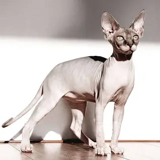
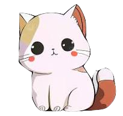
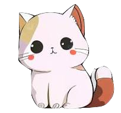

Kucing atau nama ilmiahnya disebut "Felis Catus" adalah seekor hewan yang termasuk Mamalia Karnivora,
kata "Kucing" merujuk kepada kucing yang jinak, Kucing juga termasuk keluarga Felidae,
berarti Kucing-Kucing Besar seperti Singa, Harimau, dan lain-lainnya. masih satu keluarga dengan Kucing,
Siapa sangka hewan kecil ini satu keluarga dengan hewan-hewan yang menyeramkan dan juga
Kucing memiliki penglihatan malam yang kuat, memungkinkan mereka melihat pada tingkat cahaya enam kali lebih rendah
dari yang dibutuhkan manusia untuk melihat. Inilah Foto-foto dari beragam jenis-jenis Kucing!
British Shorthair
Sphynx Cat

Persian Cat

 
